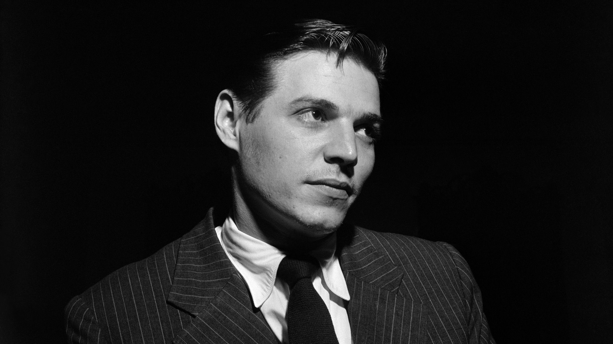
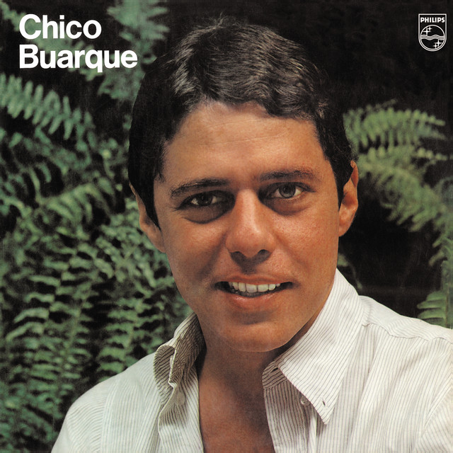

MPB
A música popular brasileira(MPB) é um gênero musical que surgiu durante a Ditadura Militar no Brasil, na cidade do Rio de Janeiro, dando sequencia a Bossa Nova. O MPB tem grande influência do floclore brasileiro.
Diferente da Bossa Nova, que era mais intimista, a nova geração de artistas sentiu a necessidade de criar uma música que dialogasse mais diretamente com as raízes brasileiras (como o samba e ritmos regionais) e que, ao mesmo tempo, servisse como um canal de expressão diante da repressão. Assim, a MPB nasceu com um forte viés de afirmação da cultura nacional e, muitas vezes, como uma forma de resistência política.
O marco inicial da MPB é frequentemente associado à interpretação de "Arrastão" (de Edu Lobo e Vinicius de Moraes) por Elis Regina, no festival de 1965. Em 1966, a final do festival da Record dividiu o país entre "A Banda", de Chico Buarque, e "Disparada", de Geraldo Vandré, mostrando as diferentes vertentes que o gênero podia ter. Canções de protesto, como "Pra Não Dizer que Não Falei das Flores (Caminhando)", de Geraldo Vandré, tornaram-se hinos de resistência contra o regime.
Artistas fundamentais do MPB
- Tom Jobim (Antônio Carlos Jobim)
- Elis Regina
- Chico Buarque
- Caetano Veloso
- Gilberto Gil
- Milton Nascimento
Ícones da Musica Popular Brasileira
Tom Jobim: O Arquiteto da Música Brasileira Moderna
Antônio Carlos Jobim, o Tom Jobim, é universalmente reconhecido como um dos maiores gênios da música brasileira. Como um dos criadores da Bossa Nova, ele revolucionou a harmonia e a melodia, fundindo o samba com o jazz de uma maneira única e sofisticada. Suas composições, como "Garota de Ipanema", "Chega de Saudade" e "Águas de Março", não apenas levaram a música brasileira para o mundo, mas também se tornaram símbolos atemporais da identidade cultural do Brasil.
Chico Buarque: O Poeta do Cotidiano e da Crítica Social
Chico Buarque de Hollanda é uma das figuras mais completas e reverenciadas da cultura brasileira. Considerado um dos maiores letristas da língua portuguesa, ele domina a arte de transformar o cotidiano, o amor e as questões sociais em poesia cantada. Durante a ditadura militar, sua obra se destacou pela genialidade ao usar metáforas para criticar o regime em canções como "Cálice" e "Apesar de Você". Sua influência como músico, dramaturgo e escritor o consolida como um pilar da MPB.